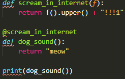
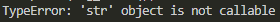
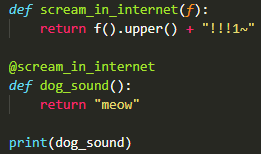
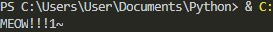

ננסה לעטוף את הפונקציה בפונקציה שצועקת טקסטים בשפת האטנטרנט, ואז לקרוא ל-dog_sound:

ואנקונדה תצעק עלינו בחזרה שאנחנו בכלל מנסים לקרוא למחרוזת, ולא לפונקציה:

מכיוון שזה לא כיף לקבל צעקה מבעלי חיים שגדולים ממך (קל וחומר, אנקונדות), ננסה להבין את הרמז,
ונווכח שפתאום, בלי שימוש ב-() - אנחנו כבר קוראים לפונקציה:

טאדהה!!!1~

מה קרה פה?
ואיך פותרים את זה?
עריכה:
שכחתי def בתוך הקשתן.
זה אומר שבמקום ליצור פונקציה, ולהחזיר אותה (כדי שנריץ אותה בעצמנו אחרי זה) -
הוא כבר “עוקף” צעד, ומחזיר הרצה-של…
עוד עריכה:
ים הגיב עם מגה-הסבר, צד-צעד, ודוגמאות שעושים ים סדר בחשיבה על הנושא באופן כללי!
אז אם מישהו פספס פה כמוני - שיעוף פוסט למטה לקרוא. 3>
Yam
כותב את הדוגמה שלך בקוד כדי שיהיה קל יותר להתייחס אליה: